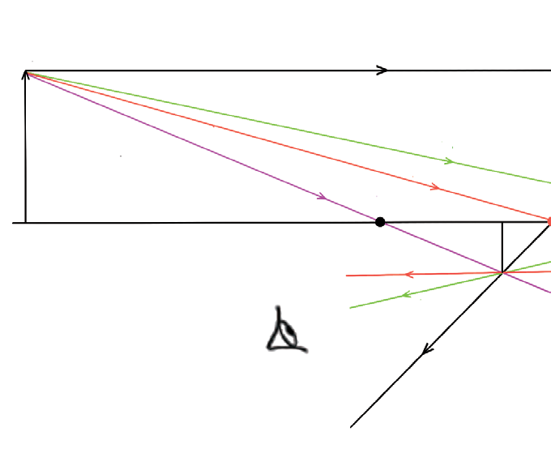
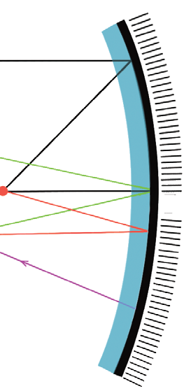

Images formed by concave mirrors
The rules of reflection for concave mirrors are used to locate an image formed by a concave mirror. These rules are as follows:
- 1. An incident ray that travels parallel to the principal axis of the mirror is reflected through the focal point.
- 2. An incident ray that passes through the focal point is reflected parallel to the principal axis.
- 3. An incident ray that passes through the centre of curvature is reflected along its path.
- 4. An incident ray striking the pole of the mirror at an angle to the principal axis is reflected such that the angle of incidence equals the angle of reflection, measured with respect to the principal axis.
In Figure 4.24, the incident rays are drawn along with their corresponding reflected rays. Each reflected ray converges at the image location and then diverges to the eye of an observer. Every observer can observe the same image location, and every light ray follows the laws of reflection. However, only two of these rays are needed to determine the image location since it only requires two rays to find the intersection point. Figure 4.23 shows the rays used to locate images formed by concave mirrors.


In drawing ray diagrams, when the light rays diverge, they are extended backwards to locate the image. In such cases, the image formed is virtual because it is formed by virtual rays of light, which are represented by dotted lines. The image is real when it is formed by the intersection of real rays of light. Activity 4.8 assists on experimental determination on behaviours of image formed by concave mirrors.